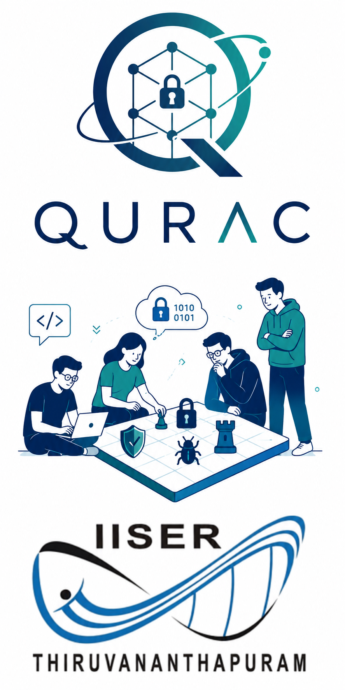

About QuRAC
The Quantum-Resilient Applied Cryptography (QuRAC) Research Group is being started in 2026 within the School of Data Science at the Indian Institute of Science Education and Research Thiruvananthapuram (IISER TVM), under the leadership of Dr. Laltu Sardar.
Our mission? To keep secrets secret—even when quantum adversaries bring more than classical computing power to the attack. As quantum computing advances, some cryptographic assumptions that protect today's data may no longer hold tomorrow. We intend to study these threats before they become practical attacks. After all, discovering that your security parameter was too optimistic is a rather expensive way to learn about asymptotic complexity.
At QuRAC, we combine mathematical rigor with practical systems engineering to investigate cryptographic protocols that remain secure against quantum adversaries. Our research interests include post-quantum cryptography, searchable encryption, privacy-preserving computation, secure cloud computing, and encrypted graph analytics. We want our security proofs to survive more than a skeptical reviewer, our implementations to survive more than the test cases, and our encrypted data to reveal less than its owners intended. Ideally, the only thing an adversary learns is that the reduction was tighter than expected.
Our philosophy is simple: prove it, build it, test it—and then let the adversary have a reasonable chance. We aim to translate rigorous security guarantees into practical implementations for cloud and distributed computing, while developing and maintaining open-source tools that support reproducibility and collaboration across the cryptographic research community. We welcome clever attacks, provided they arrive as research contributions rather than incident reports. A failed attack can become a theorem, a counterexample, or at least a very productive group meeting.
Through this combination of foundational research and applied development, QuRAC seeks to advance quantum-resilient security and privacy-preserving computation, contributing both near-term technological solutions and long-term scientific advances. We cannot promise that every adversary will give up; cryptographers are well aware that adversaries rarely respect termination conditions.
⚛ QuRAC: Because “trust us, it’s encrypted” is not a security proof, “computationally infeasible” is not the same as “impossible,” and quantum adversaries have not agreed to respect your assumptions.


Research Highlights
Applied Cryptography
Searchable encryption, privacy-preserving computation, and encrypted data analytics.
Learn more →Post-Quantum Cryptography
Lattice-based, code-based, and hash-based primitives addressing NIST PQC standardization and beyond.
Learn more →Quantum Cryptography
Quantum key distribution, quantum-secure protocols, and security in quantum adversary models.
Learn more →Secure Cloud Computing
Secure outsourced computation, verifiable queries, and privacy-preserving cloud services.
Learn more →Consensus & Blockchain Security
Post-quantum blockchain, Ethereum Layer-2 security, VDFs, and distributed consensus protocols.
Learn more →Latest News
- Paper "Efficient and Post-Quantum Conjunctive Dynamic SSE with Strong Privacy Guarantees" accepted at PKC 2026.
- Invited talk on "Mitigating Randao Manipulation: Is VDF the Missing Link?" at Crypto Winter School 2025, IIT Bhilai.
- Talk on "From Classical to Quantum Cryptography: The Next Leap in Secure Communication" at Tathva'25, NIT Calicut.
- Member of Program Committee , 1st Workshop on Decentralized Immutable Secure Tamper-Resistant Encrypted Searchable Storage, (DISTRESS 2026).
- PhD positions open in Applied Cryptography, Blockchain & Layer-2 Technologies. Candidates with CSIR/UGC NET or INSPIRE fellowships may apply directly.
- Dr. Laltu Sardar served as Co-organiser of the AI for Science Pre-Summit Event (IndiaAI Mission), IISER TVM, 2025.
Sometimes it is the people no one can imagine anything of who do the things no one can imagine.